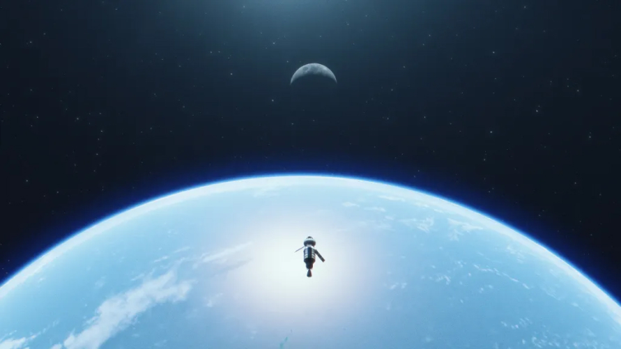
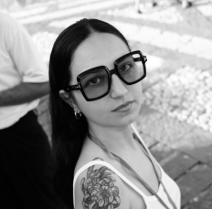
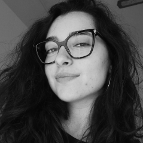
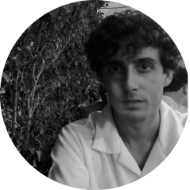

Chi siamo?

Fabiana Privitera, Rebecca Ripepe, Luigi Falanga e Carmelo Provenzani, siamo quattro studenti dell’Accademia di Belle Arti di Catania che, per la realizzazione di un progetto accademico, avevamo il compito di creare un sito web riguardante un argomento a nostra scelta. La tematica decisa nasce infatti dalla comune curiosità ed interesse riguardo l'argomento, e dal desiderio, di ognuno di noi, di voler creare uno spazio, accessibile a tutti, in cui racchiudere tutte le informazioni riguardo ai fenomeni e agli aspetti più interessanti del cosmo.

Rebecca Ripepe: realizzazione design grafico

Fabiana Privitera: scrittura codice
Luigi Falanga: realizzazione design grafico

Carmelo Provenzani: raccolta informazioni ed aiuto design grafico